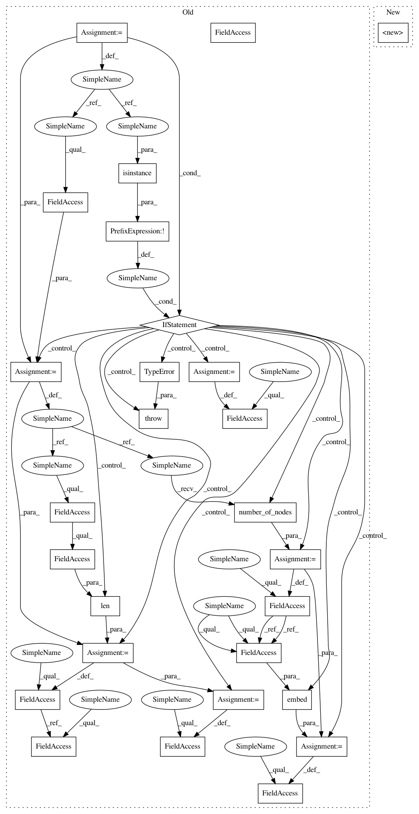

292ac3d96149788275b95842c272ea605e9588a4,stellargraph/layer/knowledge_graph.py,ComplEx,__init__,#ComplEx#Any#Any#Any#Any#,91
Before Change
embeddings_initializer="normal",
embeddings_regularizer=None,
):
if not isinstance(generator, KGTripleGenerator):
raise TypeError(
f"generator: expected KGTripleGenerator, found {type(generator).__name__}"
)
graph = generator.G
self.num_nodes = graph.number_of_nodes()
self.num_edge_types = len(graph._edges.types)
self.embedding_dimension = embedding_dimension
def embed(count):
return Embedding(
count,
embedding_dimension,
embeddings_initializer=embeddings_initializer,
embeddings_regularizer=embeddings_regularizer,
)
// ComplEx generates embeddings in C, which we model as separate real and imaginary
// embeddings
self._node_embeddings_real = embed(self.num_nodes)
self._node_embeddings_imag = embed(self.num_nodes)
self._edge_type_embeddings_real = embed(self.num_edge_types)
self._edge_type_embeddings_imag = embed(self.num_edge_types)
def embeddings(self):
Retrieve the embeddings for nodes/entities and edge types/relations in this ComplEx model.
After Change
embeddings_initializer="normal",
embeddings_regularizer=None,
):
super().__init__(
generator,
ComplExScore(),
embedding_dimension=embedding_dimension,
embeddings_initializer=embeddings_initializer,
embeddings_regularizer=embeddings_regularizer,
)
build = deprecated_model_function(KGModel.in_out_tensors, "build")
In pattern: SUPERPATTERN
Frequency: 3
Non-data size: 27
Instances
Project Name: stellargraph/stellargraph
Commit Name: 292ac3d96149788275b95842c272ea605e9588a4
Time: 2020-06-04
Author: Huon.Wilson@data61.csiro.au
File Name: stellargraph/layer/knowledge_graph.py
Class Name: ComplEx
Method Name: __init__
Project Name: stellargraph/stellargraph
Commit Name: 292ac3d96149788275b95842c272ea605e9588a4
Time: 2020-06-04
Author: Huon.Wilson@data61.csiro.au
File Name: stellargraph/layer/knowledge_graph.py
Class Name: ComplEx
Method Name: __init__
Project Name: stellargraph/stellargraph
Commit Name: 292ac3d96149788275b95842c272ea605e9588a4
Time: 2020-06-04
Author: Huon.Wilson@data61.csiro.au
File Name: stellargraph/layer/knowledge_graph.py
Class Name: DistMult
Method Name: __init__
Project Name: stellargraph/stellargraph
Commit Name: 292ac3d96149788275b95842c272ea605e9588a4
Time: 2020-06-04
Author: Huon.Wilson@data61.csiro.au
File Name: stellargraph/layer/knowledge_graph.py
Class Name: RotatE
Method Name: __init__